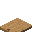

At the boardAt the board
Put a stack on the board, then hold use with the knife. Each piece takes a few strokes.
Garlic is done by hand: break the bulb into cloves, then peel each one.
Crouch with an empty hand to take food back.

At the boardPut a stack on the board, then hold use with the knife. Each piece takes a few strokes.
Garlic is done by hand: break the bulb into cloves, then peel each one.
Crouch with an empty hand to take food back.